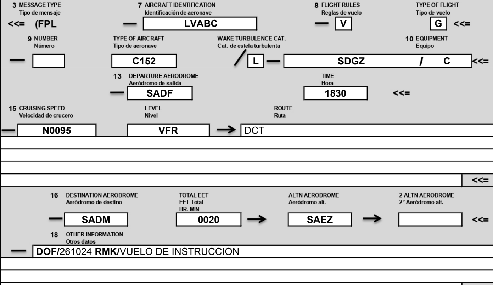
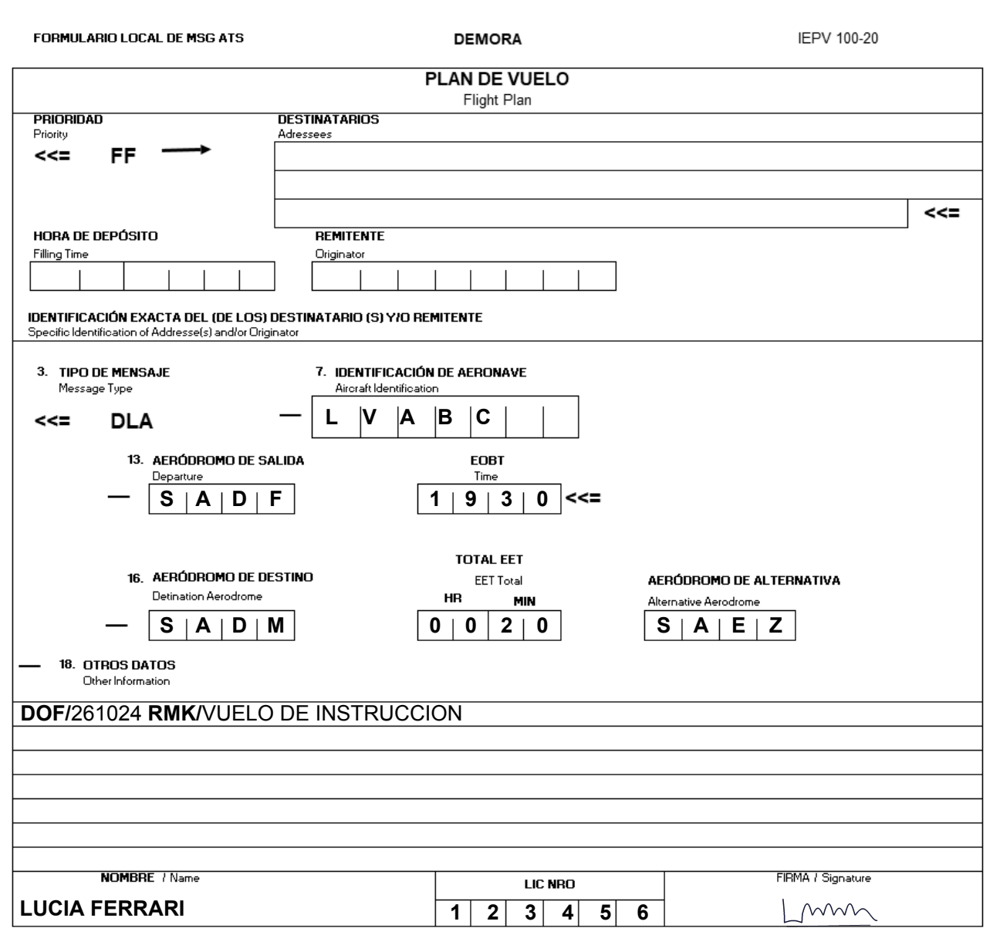
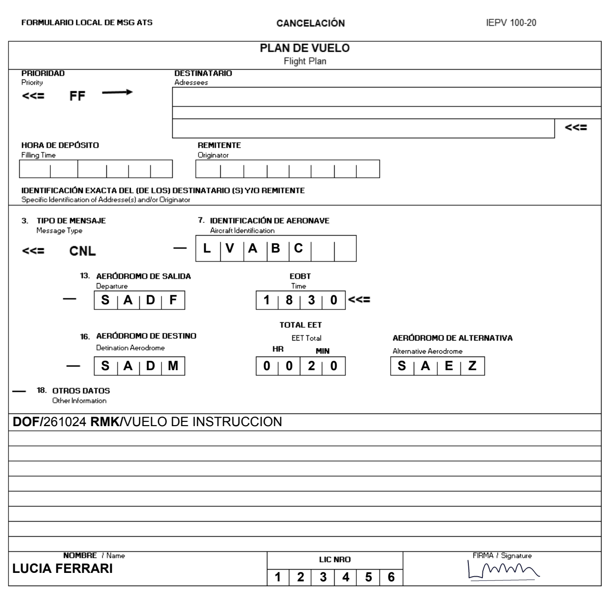

Tu avión guardado completa el equipo, el transponder y los colores. Escribís la ruta y Vector te sugiere la duración y la autonomía.
Y queda guardado: el mismo vuelo otro día es duplicarlo.
07010KT CAVOK
BECMG 2017/2019 10015KT
⚠ A4197/2026 · en tu horario
PUESTO PRKG ACFT PSN 4B Y H4 CLSD
08/10 1528Z – 31/10 2200Z
⚠ A4249/2026 · en tu horario
TRANSMISOMETRO RVR RWY 05 U/S
12/10 1122Z – 11/11 1105Z
▸ 1 vigente, pero no en tu horario
▸ 3 permanentes (obstáculos, cambios al AIP)
Leemos el horario de cada NOTAM: el que rige a la madrugada no te salta en un vuelo a la tarde.
Las más cercanas a SADF
Las respuestas de la oficina te llegan a tu mail.
Como pide la AIC A 19/2026: firmado, en PDF y con la matrícula en el asunto. Después llamás para confirmar, como siempre.


Con los formularios de la AIP, firmados, a la misma oficina. La demora con la hora nueva en UTC, hasta tres por vuelo.
Plan de vuelo
SADF → SADM · LVABC
Según el plan: 24/10, salida 15:30 y llegada 15:50, hora argentina
Cuando pasa tu hora de llegada, el inicio te pregunta y te deja el avión, la ruta y la fecha. Los horarios los ponés vos. Y si se te pasa, te avisamos por mail.
Para alumnos y pilotos en Argentina. Se instala en el teléfono como una app.